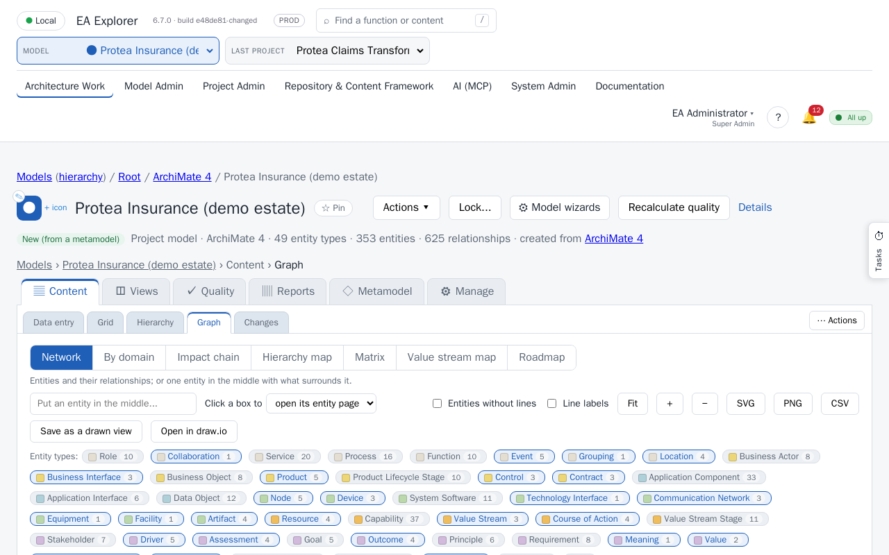

Save a picture as a drawn view
For: Practising architects
Keep a generated diagram as a drawing you can change by hand.

#/metamodel/{m}/graphWhy do this
Generated diagrams are fast but laid out automatically. Saving one as a drawn view lets you arrange it for an audience while each shape stays bound to its entity. See Views, reports and KPIs.
Views and reports are where the model meets its audience. Choose the one that answers the question in front of you, for the person in front of you, and it stays current as the model changes.
In TOGAF terms: Architecture views and viewpoints: artifacts that address stakeholders' concerns, in any ADM phase. See EA Explorer and the TOGAF Standard.
The goal: A generated diagram becomes a drawing you can arrange.
Before you start You need a role on the model that may change content (Architect or higher).
Steps
- Open a diagram or graph.
- Save as a drawn view: name it; Save.
- It belongs to the model; change it in draw.io.